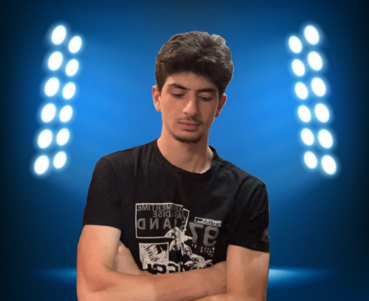

Boslevi


პავლეJr -
დაიბადა 2004 წლის 24 ოქრომბერს , არის მეგრელი, მაგრამ არიცის მეგრული (რანაირი მეგრელი),
ძირითადად დაინტერესებულია ექსტრემალური ცხოვრებითა და ვარჯიშით , ასევე ევასება გულაობებიც.
მიღწევები : 3 წლისამ დაამტვრია კარადა და დაწვა ხალიჩა, 8 წლის იყო როდესაც პირველად დაილეწა
ველოსიპედით კუს ტბაზე .
მოგებული აქვს სკოლის ჩემპიონატი კალათბურთსა და ფრენბურთში,
ასევე მონაწილეობდა თბილისის ჩემპიონატზე ფრენბურთში. 2020 წელს კორონამ დაუმთავრა ძიუდოს კარიერა.
სამომავლო გეგმები : გახდეს პროგრამისტი და იყოს კარგ ტანზე სიბერემდე.